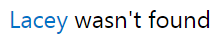
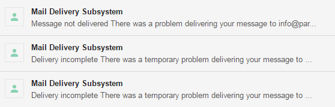
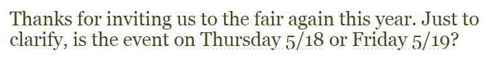
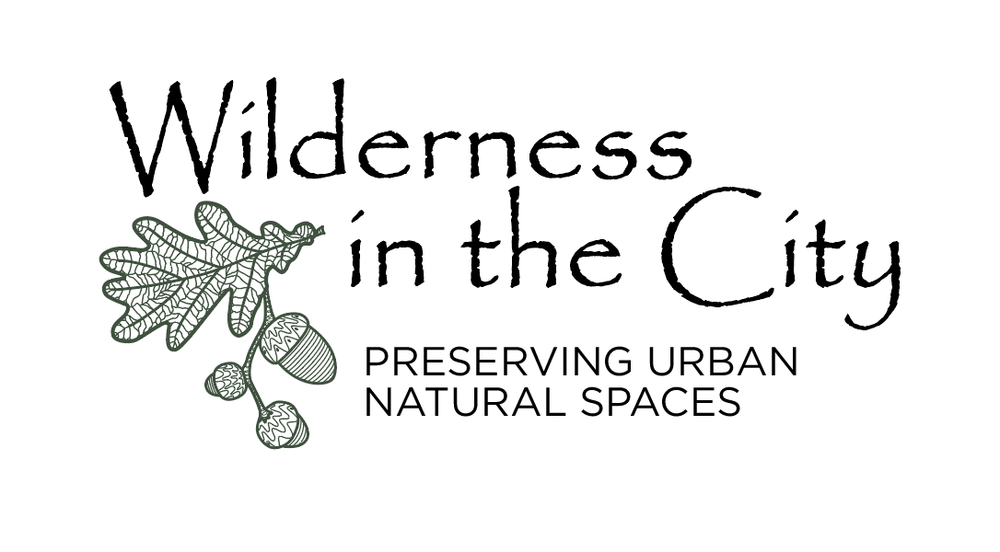
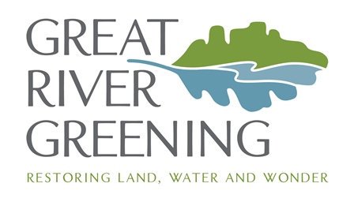
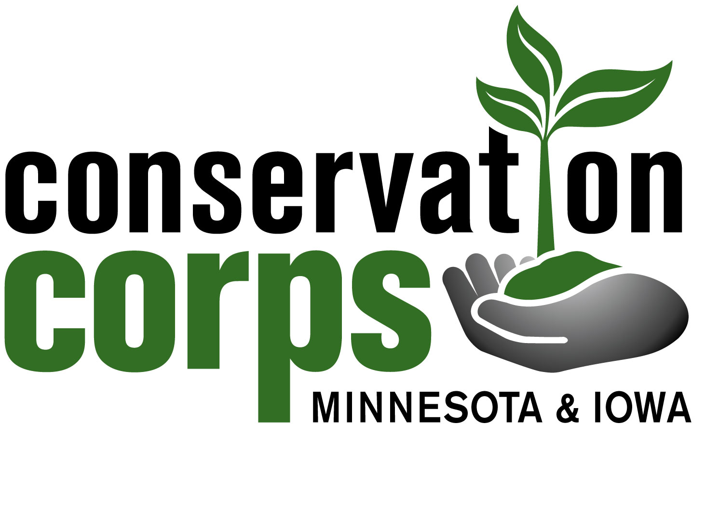
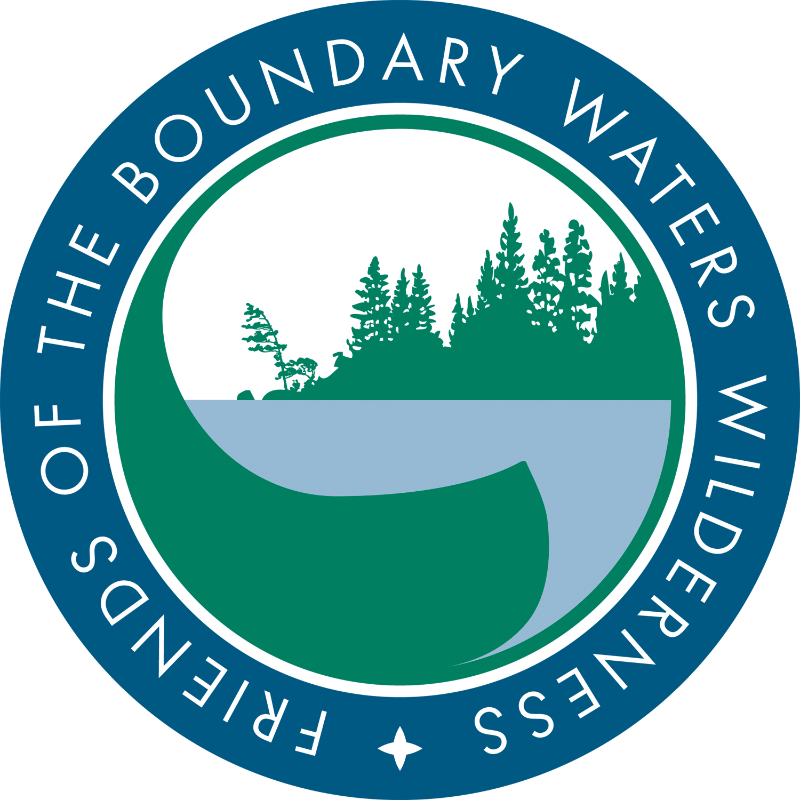

Environmental Organizations Fair
Jack Hunter
"Now is the time to be the change you wish to see in the world." - Adaption of a quote by Mahatma Gandhi
About Me And My Project
What is this?
The idea of the fair is to get as many local organizations as possible together and have them bring whatever information they feel expresses their organization's importance, and give them the opportunity to recruit some volunteers if they desire to do so.
Why did I do this?
I like to call myself the host of the Environmental Organizations Fair. This is because, while I've put a lot of personal work into this year's fair, I am just a temporary entity. Last year, a student named David Ortega came up with the idea for the fair and hosted it himself. I thought the project sounded awesome, and I wanted to run it again and build off of it. I changed some stuff about it that didn't work last year, and I hope that my changes will be fruitful.
What went into this?
(And how I almost ruined everything with a typo.)
It was incredibly helpful that David was able to provide his list of contacts from last year. However, as anyone who's ever sent out an email to large amount of people knows, people's and organization's addresses change all the time, and often without notice.
This became an obstacle very quickly as I realized nearly a third of my emails weren't landing in anyone's inbox and were being lost somewhere into the vast void that is the Internet.
Most of the time I spent on this project went to figuring out the new emails of every organization (I hope). My next obstacle was a very simple but terrible typing error that I made in my email.
You can probably guess what the typo was.
Final words
All in all, despite the mishaps, it was pretty fun to work on, and I'm thinking it will be pretty successfull. Next year, hopefully the new host can avoid some of the struggles I went through.
Attending Organizations
The Environmental Fair hasn't happened yet this year. As such, I can't predict which of the organizations that haven't RSVPed will be attending. This is a list of organizations which have, and a little bit about them.
Wilderness in the City
From their webpage, Wilderness in the City is dedicated to preserving urban natural areas for future generations through natural resource stewardship, community outreach, and advocacy. They are currently focusing on the Lebanon Hills Regional Park in Dakota County.
Dakota County

You likely live in Dakota County, meaning you already know what it is. But if you don't, here's a good quote that I picked up from the Dakota County Volunteer Coordinator that I emailed that I feel adequately represents it. “A civilization flourishes when people plant trees under which they will never sit.” – Greek Proverb
Great River Greening
Great River Greening is an environmental conservation nonprofit working throughout Minnesota with a mission to inspire and lead local communities in restoring and conserving the land and water that enrich our lives. A leader in Minnesota community based restoration, they've worked with nearly 40,000 volunteers.
Contacts
I contacted many people. Several of them couldn't come due to a conflict of dates. They all said that they would like to attend next year, and for that, they deserve an honorable mention.
Conservation Corps
Conservation Corps provides hands-on environmental stewardship and service-learning opportunities to youth and young adults while accomplishing conservation, natural resource management and emergency response work. They try to provide education and job resources to all who are willing to volunteer and learn.
Friend of the Boundary Waters Wilderness
To protect, preserve and restore the wilderness character of the Boundary Waters Canoe Area Wilderness and the Quetico-Superior Ecosystem. Over 200,000 people visit the Boundary Waters Canoe Area each year. This organization strives to preserve as much of the wilderness as they can, and are the leading organization in doing so.